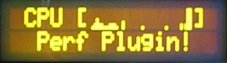
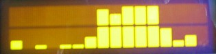
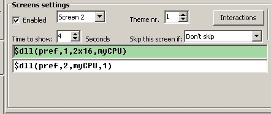
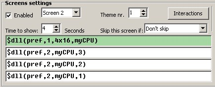

Perf Plugin for LCD Smartie

This is a plugin that makes it possible to display bar-graphs of performance counters (such as % CPU Load). The graphs will appear on the LCD display, but currently Smartie's virtual display will display junk.
Limitations
This plugin redefines the custom characters, so only one type of graph can be on the display at once (i.e. you can have two or more graphs but they must use the same barstyle and direction). [Except, there can only be one "Tiny graphs" at a time on screen].
Download
Perf Plugin Alpha 2 can be downloaded here.
Install
To install this plugin copy the perf.dll into the plugins directory of LCD Smartie. [Only the 5.3 beta 1 and above builds are supported.]
The zip file also includes a config-perf.ini file which shows how the plugin can be used - backup your config.ini file before renaming this as config.ini.
Basic Use
To use the plugin you will need to insert commands into the your screens - please ensure that all graph lines have a consistant scroll setting (i.e. all on or all off)!
The basic form of the commands will only display a graph of the percentage of CPU use:
- Function 1: $dll(perf,1,[height]x[width],[name]) - this will create a graph object called [name] that is [height] high and [width] wide, it will also display the top line of the graph. [name] can be anything you want, it is only used to tie the different commands to the same graph.Example: $dll(perf,1,2x20,Test)
- Function 2: $dll(perf,2,[name],[line]) - this command is only needed if your graph is higher than 1 line high. This command displays a line from an already created (using the function above) graph object. The name must match that given in function 1. Line 1 is the bottom of the graph, line 2 second from bottom etc. Example: $dll(perf,2,Test,2)
On a 2 line display, the lines entered into smartie will look something like this:
On a 4 line display, the lines entered into smartie will look something like this:
Advance Use
Function 1
The format of function 1 is: $dll(perf,1,[options],[name])
[option] takes the form: HeightxWidth#Direction#BarStyle#SampleTime#min#max#CounterName
Where:
- HeightxWidth is the size of the bar graph
- Direction is one of: d, u, l, r [for down/up/left/right]. [default: u]
- SampleTime is how often the counter value is fetched, in 1/10 seconds. [default: 5 (i.e. 0.5 seconds)]
- BarStyle selects the custom characters to use. 0 means no custom characters (so you can define your own), 1 means a solid bar, 99 and 100 are special cases for "Tiny graphs", see below for details. [default: 1]
- CounterName is a name of a performance counter. [default: \Processor(0)\% Processor Time]
- min - used for scaling graph. [default: 0]
- max - used for scaling graph. [default: 100]
All options are optional except HeightxWidth, but the order must be maintained - so to leave BarStyle out, you must also leave out Sampletime, min, max and CounterName.
Examples:
- $dll(perf,1,2x16#u#1#5#\Processor(0)\% Processor Time,Test1)
- $dll(perf,1,2x16#u#1#5,Test2)
- $dll(perf,1,4x20#d#1,Test3)
- $dll(perf,1,2x16#u,Test4)
- $dll(perf,1,4x40,Test5)
The best way to find the name of a performance object is to use the administrator tool "performance monitor". This microsoft page gives some details on the format (which even allows remote machines to be monitored). Here are some ideas (there are tons of others):
- \Processor(0)\% Processor Time - Cpu usage of the first processor.
- \Processor(1)\% Processor Time - Cpu usage of the 2nd processor.
- \Processor(_Total)\% Processor Time - Total cpu usage.
- \\REMOTECOMPUTER\Processor(0)\% Processor Time - The Cpu usage of the first processor on computer REMOTECOMPUTER.
- \Process(LCDSmartie)\% Processor Time - Cpu usage caused by LCD Smartie.
- \System\Processes - The number of active processes.
- \Paging File(_Total)\% Usage - Percentage of page file in use.
Tiny Graphs
When barStyle of 99 is used then a tiny graph will be produced, where each bar is only 1 pixel wide. The graph can be up to 8 characters wide and only 1 character wide (so, 1x8 or less).
Users with Crystalfontz displays that are gapless between character cells (i.e. 631, 632, 634) can use a barStyle of 100 to get a gapless graph!
NB: Only directions up and down are supported with tiny graphs.
Function 2
Same as basic use function 2.
Function 4
This function fetches the value of a performance counter.
The format of function 4 is: $dll(perf,4,[SampleTime],[CounterName])
Example: $dll(perf,4,5,\Processor(0)\% Processor Time)